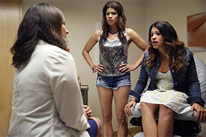
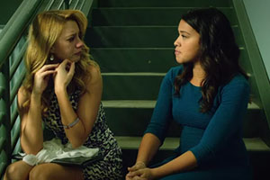
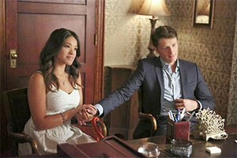
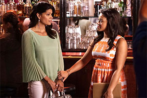
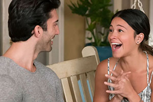
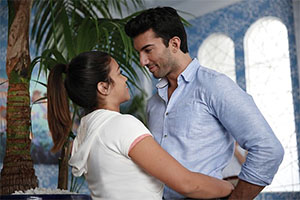

Episodes
Chapter One
Jane finds her life turned upside down when she is artificially inseminated by accident.
Chapter Two
Jane's mother pressures her to sue the doctor responsible for the accidental insemination.
Chapter Three
Jane contemplates a life-changing decision and questions Petra's ability to be a mother.
Chapter Four
Jane experiences guilt concerning her feelings for Rafael, and she admits this to Michael.
Chapter Five
Jane moves in with Michael after she gets mad at Xo, but then she reconsiders her hasty actions.
Chapter Six
Jane and Rogelio begin to grow closer until she meets his mean twin teenage stepdaughters, who are determined to make her life miserable.
Chapter Seven
Jane decides the best thing for her is to stay away from Rafael, but when her friends insist on taking her to the hot new club that he owns, she finds it hard to avoid him.
Chapter Eight
Jane and Rafael both reveal shocking secrets to each other. Xo is excited when a music producer, Elliot, contacts her to record a demo.
Chapter Nine
Petra tries to get custody of the baby, all the while Michael tries to find proof Rafael may be Sin Rostro. Xiomara gets a record offer.
Chapter Ten
A hurricane forces Jane to stay at the Marbella; Rogelio rushes to the hospital to comfort Xo; after getting his position back, Rafael is faced with a tough decision regarding layoffs.